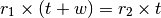

chase – Speed Chase¶
This is part of the speedrtd program. Sort of.
Here’s the hamdex index entry, claiming it’s part of speedtd. It’s actually separate, but chained from speedtd.
"SPEED CHASE","","","SPEEDTD"
Here’s the intro text:
PROGRAM NAME by George Murphy VE3ERP
SPEED CHASE
If two entities are launched along the same path from the same spot at
different times and speeds they will eventually meet. This program describes
the meeting. Times, speeds and distances can be in any units.
Analysis¶
We’re solving two related Rate-Time-Distance problems.
We have two objects with distinct rates,  .
.
The slow one, speed , starts first.
The fast one, speed  , starts after a delay of
, starts after a delay of  .
.
They’re on the same trajectory, so the fast one must catch the slow one. The questions are where and when?
Each object’s position after time is and .
When they meet, the two vales of d are the same.

Solving for t, we get
Once we know t, we can use this to solve for d.
Implementation¶
This doesn’t seem to deserve a proper HamCalc calculation module for one formula.
It’s a cute little module in hamcalc.stdio.
Legacy Quirks¶
The legacy program has an interative approximation that doesn’t make much sense at all.